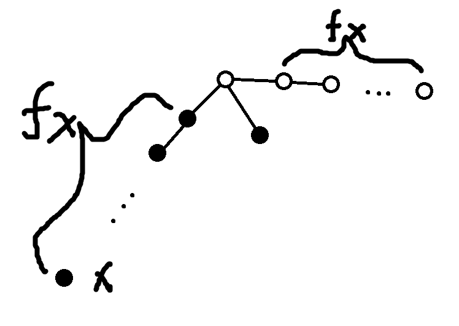
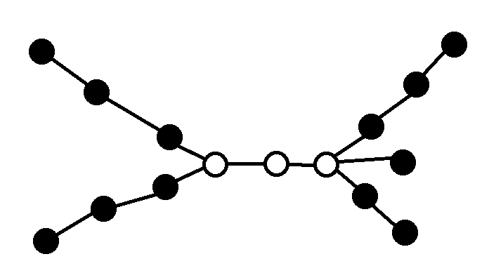
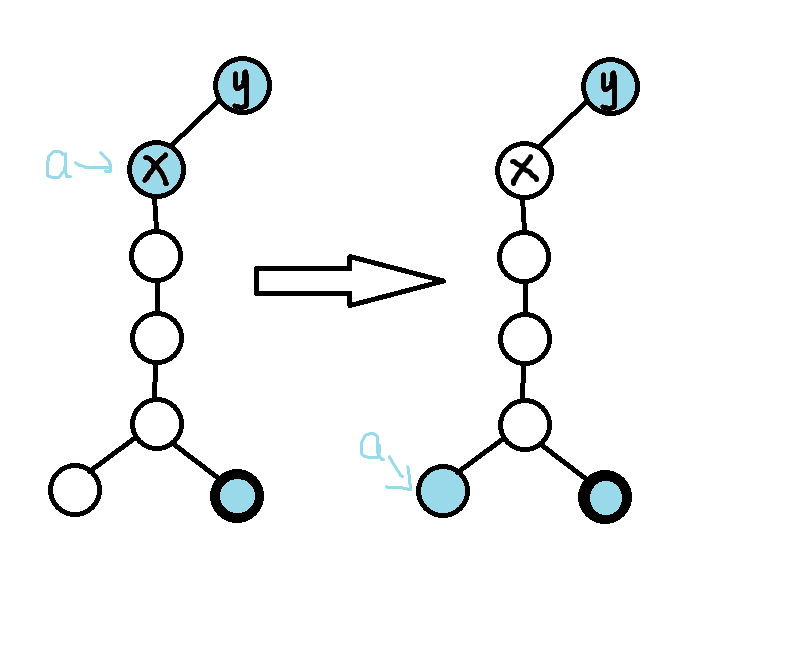
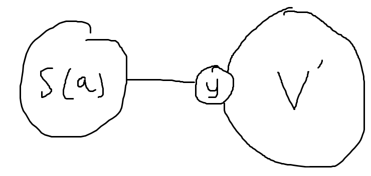
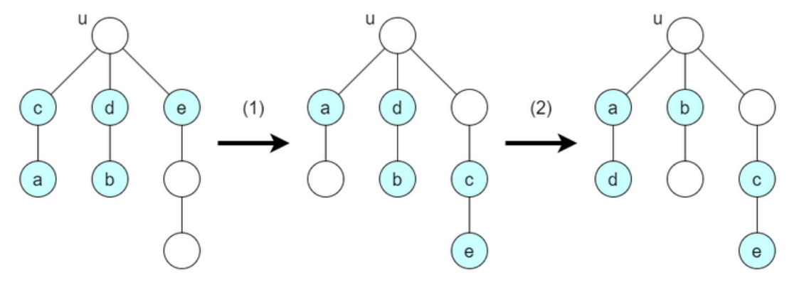

AGC066 E. Sliding Puzzle On Tree
题目链接：https://atcoder.jp/contests/agc066/tasks/agc066_e
题目大意：
给一棵树，然后依次在编号为 $1,2,…,n$ 上面放不同的石子，每次放完石子后，问经过下面操作任意次后能得到多少种不同的局面：
将一个石子移到相邻没有石头的位置。
我的做法
首先做这道题目一个直观的感受是，答案的结构会不会是可以把石头分成一个个集合，集合内的石头可交换吧？
但是首先就有一个问题，树上没有偏序结构，什么叫可交换？没有次序怎么定义可交换？
注意到一个事情，假设把石头看成没区别的，那么石头可以摆成任意一个局面，我们不妨固定一个局面 $A$ ，然后对于每种其他局面 $B$，我们也固定一种从 $A$ 到 $B$ 的交换方法，而这个交换方法可以用 $\{(x,y)\}$ 来表示，逆过来同理，具体表示为将 $A$ 中的 $x$ 位置的石子放到了 $B$ 的 $y$ 位置。
因此对于 $A$ 的同一局面的不同标号，一定可以对应 $B$ 的不同标号，同理 $B$ 的也可以变成 $A$ 的。
所以最终答案一定可以表示成 $\binom{n}{k}*cnt$ ，$cnt$ 表示同一局面有多少种不同的标号。
因此交换就可以定义了，固定一个局面下两个点的标号是否可交换。
那么怎么判断可交换呢？我在思考这个问题的时候是在 $fix$ 一条直径的情况下做的，然后再推广到不 $fix$ 的情况，这里直接给出我的最终做法，对我的思考过程感兴趣的读者可以去看反思部分。
考虑以某个叶子为根，然后根据某种神奇的 $dfs$ 序开始放下每一个石子（多叉树的后序遍历）。（下面的讨论和证明都默认是基于这个局面，基本上换个局面下面的观察就大概率是错的了）
先特判 $k\ge n-1$ 的情况。
剩下的情况，然后我们考虑两个石子什么时候可以交换，至于不能用交换形容的情况，我们等会再说。
显然只要两个石子是同父亲的，就可以交换，考虑石子什么时候和自己的儿子可交换，一个充分条件是，设 $f_{x}$ 表示 $x$ 到第一个二叉父亲（不包括自己）的所需要的边数，则 $k\le n-(f_{x}+2)$。
这也是为什么要选个叶子当根，否则还要讨论跨过根去到根的另一个子树的情况。
根据我们放石子的顺序，我们一定可以摆出下面的局面：  手模一下就行了，证毕。充分性证明
但是，这就够了吗？
事实上是够了。
必要性及只用考虑交换的证明
可以发现，由于我们的放法，$x$ 这个位置的石子在放下时，其子树就满了，因此空位都在 $x$ 子树外。
设 $gfa_x$ 表示 $x$ 的第一个有两个以上儿子的祖先。
大致情况就和下面的图一样，将 $x$ 移动到 $gfa_x$ 部分，这样石子就分成了两个部分，显然这两个部分之间无法产生交换。

因此，这个节点就像是一个分界点，将子树和外面的点分开，两部分之间不会产生交换。
要严谨写证明过程的话，归纳证明就行了。
证毕。
那么上面的情况就够了吗？
够了，在讨论了上面的情况后，两个石子不能交换的充要条件就是中间有个第二种情况的拦路虎，而显然发生这种情况时，两个石子一定不能交换，因此这不仅是只考虑上面情况的充要，而是原问题的充要条件。
但是问题是，我们现在考虑完交换，那这是否就覆盖了所有的情况呢？
我们这么想，假设 $x,y$ 不可交换，但是存在一个变换，能使 $x$ 到达 $y$ 所在的位置，那么根据上面 $x,y$ 不可交换的条件，中间一定存在一个类似分界一样的东西，会限制 $x$ 不能到达 $y$ 能到达的一些地方，而前面说法矛盾，故不存在这种情况。因此，只考虑交换便能覆盖所有的局面。
做完了。
实现方面，注意到对于 $\forall x,y$ ，上面只给了在 $x\to y$ 这条路径上都已经按照顺序放了石头之后 $x,y$ 可交换的条件，但是如果还没放满呢？
显然除了 $lca$ 外，如果一个位置放了石子，且其的一个儿子也在这条路径上，则显然必须满足这个位置能和儿子交换，而且这显然是充要的，但我们注意到一个事情，如果 $x$ 在 $t$ 的时间假如，则其能与儿子交换的条件要么一直不满足，要么在 $\le t-1$ 时一定能满足。
因此 $x,y$ 可交换的条件在放不放满石头的时候都是一样的（除了 $lca$ 外，如果一个位置和其的一个儿子都在这条路径上，则必须满足这个位置能和儿子交换），直接实现就行了。
时间复杂度：$O(n\alpha(n))$ 。
1 |
|
真是场酣畅淋漓的做题啊。
破案了，我说为什么难度比 $D$ 低，原来是原题加强，但是原题做法能过。
反思
想想我的想题过程：
觉得肯定要思考哪些石头是能交换的。（卡了至少 30 分钟）
否决理由：“交换”的定义非常奇怪，对于两种不同的摆石子方式，怎么判断两个石头已经被交换了？（但实际在后面发现，只要解决了这个问题，就已经成功很大一步了，可惜我当时的第一想法是放弃而不是解决）
觉得可能是通过一个石子能够到达哪些位置进行解答，显然处于等价关系的点应该能到达的位置是一样的，本质是尝试在定义上面的交换关系。（卡了至少 30 分钟）
否决理由：能到达的点这个东西并不好量化，而且求出来也十分困难，讨论起来也很麻烦，还不一定能讨论出来，直觉上正解肯定不是这么搞的，直接放弃了。
- 发现答案一定是：同种石子的答案 * 一种摆石子方式的不同局面（同一种方式的不同局面通过同一种映射一定到达另一种方式的不同局面，是个双射），所以可以直接固定一个摆石子的方式，研究有多少种不同的局面，这个时候猜测一定是一个集合里面的点可互相交换。（其实也就是严格定义了第一点）
断定三个石头共线，则左右两个石头能交换当且仅当和中间的石头能交换。（卡了至少 30 分钟）
否决理由：
1
2
3
41 2
2 3
2 4
2 5其中石头在 $1,2,3$ ，$1,3$ 可交换，但 $2$ 不可交换。
接下来卡了很久，因为总觉得这个交换非常的难思考，直到我拿着 $4$ 的例子思考了一下，打算先假设只用接下来这一种方法来判断交换（即找到了一种比较好的判断交换的充分条件进行思考）：
上面黑点表示有石子，白点表示没有石子，那么上面的所有石子都是可交换的，但是如果上下再多一个石子，多出来的石子不可交换，也就是在这种三叉路口上，没有石头的路的长度决定了可交换的有石头的路的长度。
- 那么这种结构想到了啥？直径！可以发现，如果我们放石头的时候，有限把树的直径以外的部分填满，那么石头都是可交换的，用上面的结构，但是如果必须要填在直径上呢？
继续开始思考，我们发现，我们可以不断的移动直径上没有填石头的部分到某些三叉路口，来使得某些石头是可交换的，但这个时候发现了一种情况：

可以发现，无论没有石子的部分怎么移动，这个石头都不能通过 $5$ 的结构与任何石子交换，但是上面这个例子显然能够证明这个石子无法与其余石子交换，因为其在一条直道上，无法走向左右任意一个交叉口的某个子树里（即使能走到交叉口，不能走到子树里也是白搭），那么能否这样类似的证明其余无法用 $5$ 构造交换的情况其实也是不可交换的呢？（其实这个时候就和下面说的一样，本质上是找到了一个判断不能交换的必要条件，证明这个必要条件是充分的，毕竟想想，证明无法交换就必定满足这个必要条件，反过来就是不满足这个必要条件的就是可交换的，因此这个过程其实就是判断这个必要条件是充要的过程）
刚刚那个问题的答案是可以的，可以移动整段没有石子的路段（这里其实假定了整段不分裂的移动更优，但事实是在后面在这种假设下证明了必要条件是充要的后，这个假设自然也就成立了，也就是下面说的第三点），到一个个石子路口，且只假设会不断向叶子前进，不会做多余的操作，可以用上面的方法证明不能用这种方法交换的一定都是不能交换的。

注：不会多余就是一端在交叉路口，而另一端一定是指向直径方向的。
同时，用上面这个方法也能同时证明，只需要考虑交换就够了，不会出现 $x,y,z$ 可以三轮换但是不能交换的情况。
这个时候这道题目就已经做出来了，但是感觉这个做法有点难写（在直径上操作），而且也并不广泛。
用到的直径性质也不多（只有在直径上没有石头的时候用到了直径性质），也就是说在直径上做这件事并不本质，直觉告诉我题解肯定不是这么做的。
- 这个时候尝试推广这个做法，并最终得到了我自己的最终做法。
显然这个思考过程是非常长的，因此需要优化！
在没有看题解之前，我判断这个过程中有什么东西是可以优化的呢？
就是我发现我在思考一些结论时，总是想着怎么证明，但正确做法应该是先想能不能构造反例，因为构造反例的难度往往比证明要低，而且构造不出来的过程可以指导证明
也就是我之前喜欢先从证明入手，然后因为证明不出来从而发现反例，这是很低效的，因为面对一个棘手的问题往往没有从正面切入的点。
但是如果从反面切入，如果发现是错的，结束了，不是错的，研究为什么对，这样又能对这个问题更加深入一步，而不至于摸不着头绪。
像这种题目，要先多去思考必要条件，也就是两个点不能交换的必要条件，在找到足够多后，再尝试证明或找到充要条件，这样会快很多。
显然，根据我上面的过程，我其实一种都在想两个点能交换的充要条件，但如果我先想两个点不能交换（尤其是两个相邻点）的必要条件，我想会更快想出正解。
虽然最后我想出来正解其实也是找了两个点能交换的充分条件进行思考得到的，因为一般情况下充要条件很难想出来，这个时候就需要找一些比较强的充分或者必要条件进行思考，而且很多情况下，其实这些就是充要条件，只是还没有证明的思路罢了。
假设法，在无法证明某些结论前先假设其是对的，然后进行进一步思考，如果找到反例再来推翻这个假设。
例如如果我一开始就假定两个石头能交换，则中间绝对不能隔着超过一个不能交换的石头，那么这种更加优秀的结构能够更好的引导接下来的思考（至少比原来抓瞎好），我想在这种假设下，也能更快的想出正解，而且事实是，一般想到正解后，这种假设的正确性也就迎刃而解了，尤其是在各种贪心和计数题上。
在看了题解之后，我又有了什么新的感悟？
update：没什么感悟。
官方题解
幽默了。原来我想题过程中，从“一个点能到达的集合”作为出发点是真的可行的啊。
接下来认为 $a,b,c$ 是石子，$x,y,z$ 是位置，石子和位置并不绑定，石子是石子，位置是位置，需要的时候可以把石子摆成任意想要的局面。（这里的局面指忽略标号的局面）
同时规定 $dis(x,y)$ 或者 $dis(a,x)$ 表示两点或者石子所在位置到 $x$ 的距离。
设 $S(a)$ 表示石子 $a$ 能到达的位置的集合。（注意，这里的 $S(a)$ 定义是基于石子的）
对于位置 $x$ ，我们称 $a$ 能够利用 $x$ 当且仅当 $x$ 有两个相邻节点属于 $S(a)$ 。
那么以下这三句话等价：
- $S(a)=S(b)$
- $a,b$ 能够利用同一个度数 $\ge 3$ 的节点。
- $a,b$ 能够在不影响其他位置的情况下交换他们身上的石子。（这其实给了交换的另外一种定义，但是我认为在没有想到去标号后任何局面可达这件事时，这种定义思考和证明起来是极其麻烦的，反正我不会）
$3\to 1,3\to 2, 1\to 2$ 都是显然的。
现在简单的证明一下 $1\to 2$ 。
首先你需要注意到这么一个形式：$x\in S(a)$ ，如果 $x$ 有一个相邻节点 $y\notin S$ 是什么情况？ 手动模拟可以发现一定是长这样： 总之就是 $x$ 和 $y$ 之间有一个分界线，两边的集合除了中间外无法互相到达。 从而知道 $x$ 只有一个相邻节点在 $S(a)$ 中。 因此我们可以知道 $S(a)$ 中的节点要么所有相邻节点都在里面，要么只有一个，我们又知道 $S(a)$ 是一个子连通块，因此这等价于这个子连通块中所有非叶子节点的所有相邻节点都在这个 $S(a)$ 中，这样有一个好处，任何一条从集合内走到集合外的简单路径都满足会经过子连通块的叶子（注：这个性质和定义其实是等价的，两者能互推）。 通过上面的描述，我们可以知道 $a$ 能利用 $x$ 等价于 $x\in S(a)$ 且 $x$ 不是叶子。 同时通过上面那个例子，我们知道，对于 $S(a)$ 的叶子 $x$ ，如果 $x\in S(b)$ ，那么： （准确来说这个图画的有点错，$a$ 不一定能到达左边的所有点） 要么 $b\in S(a)$ ，从而 $x$ 也是 $S(b)$ 的叶子，要么 $b\in V’$ ，则 $a,b$ 不可能利用同一个节点。 因此我们知道，如果 $S(a),S(b)$ 有交，且利用的节点有交集，可以通过上面的性质证明，$S(a)=S(b)$ ，同时因为他们利用同一个节点，所以一定有交，所以 $S(a)=S(b)$ ，证毕。证明
但是 $2\to 3,1\to 3$ 就十分麻烦了，因为在树上讨论交换是一个十分麻烦的事情，树的结构千变万化，很难用少量的讨论去说清楚这个事情。
因此一般情况下，给树赋予某种结构后再进行讨论会比较好，而 DFS 序就是树上一种比较一般且比较好的结构，所以很多树的证明都会涉及到 DFS 序，包括我的做法在最终证明和实现道题目的时候，也是用 DFS 序的。（虽然也可以用直径就是了）
在知道我的做法的正确性后，可以说明 $2\to 3,1\to 3$ 的正确性。首先可以用交换表述所有的情况，其次在 DFS 序上，两石子不能交换当且仅当路径中存在分界线那种结构，这个时候两个石子一定不能利用同一个节点。
因此两石子能利用一个节点则代表他们可以交换，证毕。
但是如果不基于我那个做法，单独给一个证明，我不会，我也没看懂题解那个证明。

我很想知道题解中这一步是怎么构造方案的，反正我感觉不基于某种结构是几乎不可能构造出来的，反正我的智商不支持我这么干，投降。
在假设上面都是对的后有意思的事情就来了。
现在可以建立一张图，其中以石子和度数 $\ge 3$ 的点为节点，其中如果石子可以利用一个位置，我们就给两点间连一条无向边，可以发现，这个图的每个连通块中的石子就是交换的。
以下都讨论都默认节点度数为 $3$ 。
但是这个图的量级是 $O(n^2)$ 的，不够得劲。注意到一个事情，如果 $a$ 能够同时利用 $x,y$ ，那么任何一个石子一定要么能同时利用 $x,y$ ，要么都不能，所以我们可以认为此时 $x,y$ 等价，可以发现这个等价也具有传递性。
同时又因为 $S(a)$ 也是联通块，我们可以得到，如果存在这样一条简单路径：$x\to y\to z$ ，那么 $a$ 能利用 $y$ / $x,y,z$ 等价。
这启示我们这么建图：$a$ 只向其各个方向上最近的 $x$ 连边，$x$ 只向其各个方向上最近的等价的 $y$ 连边，不难证明，这个图与上面那个图的连通性一样，而这个图的边数是 $O(n)$ 的。
开始讨论每条边在什么时候存在。
- $x,y$ 等价，可以发现在 $[1,n-dis(x,y)-2]$ 都存在，证明很好证明，不存在显然，存在只需要证明存在一个石头既能到 $x$ 又能到 $y$ ，这是显然的，直接先把所有石子移动到两边然后随便拿一个外面的石子就行了。
- $a,x$ ，且 $a$ 初始时就在 $x$ 上，要么有至少两个子树（以 $x$ 为根）有空位，要么 $x$ 能等价于另外一个其他节点。
$a,x$ ，且 $a$ 初始不在 $x$ 上，条件为去掉 $a$ 所在的子树（以 $x$ 为根）和 $x$ 后的空位数量大于等于 $a$ 到 $x$ 路径上的石子数量 （包括 $a,x$）
首先满足肯定 $a$ 能利用 $x$ ，不满足，但 $a$ 能利用 $x$ ，那肯定是 $a$ 的儿子子树发力了，考虑 $a$ 的子树中最靠近 $a$ 的 $\ge 3$ 度点 $y$ （包括 $a$ 脚下的节点），能发生这种情况则 $a,y$ 一定能满足上面那个条件。（手模一下就知道了）
所以此时 $a$ 能利用 $y$ ，$x,y$ 等价，那么就算没有 $a,x$ 的边，$a$ 也能通过 $a-y-x$ 走到 $x$ ，所以不连也无所谓。
然后就讨论完每条边的条件了。
其中第二种可以线性处理，而第三种边的条件等价于去掉 $x$ 为根时 $a$ 的子树，剩下的空位要 $\ge$ $dis(a,x)+1$ 需要用线段树合并处理出第 $k$ 个空位消失的时间。
这样我们就能知道每条边出现时间的右边界，而左边界显然是石子的出现时间，这个时候就已经可以用 $O(n\log^2 n)$ 的时间做完整道题目了。
但问题来了，一个石头真的需要放下了我们才能将其加入图中吗？
发现一个事情，第一种边也就是节点等价的边是不依赖于石子的，而且这个图的建立是绝对正确的，没有偷工减料，也就是只有第一种边的时候， $x,y$ 之间连通等价于他们等价。（注：有了第二、三种边也不影响这条性质成立）
同时可以证明：$\forall x≠y$ ，且此时满足了 $a$ 和 $x,y$ 连边的条件，那么无论此时 $a$ 放没放上去，$x,y$ 都等价。（发现第二三种边的条件不依赖于 $a$ 放没放上去，因此如果此时 $a$ 还没放上去，就先放上去，此时 $x,y$ 等价，然后再把 $a$ 拿走，空位增多，则此时 $x,y$ 还等价，证毕）
因此，先认为 $k$ 从大到小，则无论任何时候，与 $a$ 相关的边都只会导致一部分节点连通，而显然就算没有这些边，只靠第一种边，他们此时也是连通的，因此在 $k$ 小的时候没必要删掉 $a$ 和 $a$ 相关的那些边，只要记得不要把 $a$ 统计进答案里面就行了。
所以所有边的左边界都可以设为 $1$ ，因此可以用并查集维护，此时正道题目时间复杂度为 $O(n\log{n})$ 。
题外话：因为只有第一种边时就已经满足 $x,y$ 之间连通等价于他们等价，所以理论上 $a$ 只需要和其中一个其能利用的节点连边就行了，第三种边的部分边可以不建立就是这个原理。
但是能不能在 $O(n\alpha(n))$ 的时间完成这道题目呢？
答案是可以，和我的做法同样的手法，按照 DFS 序放石子就行了，这样每个子树都是一个区间，上面所有的查询都变得十分简单，能够在 $O(1)$ 的时间得到，这样就不用线段树合并了，时间复杂度瓶颈变为并查集，总时间复杂度变为 $O(n\alpha(n))$。
写一下我对这个做法的评价：
首先我突然觉得我的做法比他的做法好想，我搞这个做法我会直接卡在那一步 $1,2\to 3$ ，直接放弃接下来的思考（虽然接下来的部分也不简单就是了）。
但就这个做法而言，我给予高度的评价，首先他这个做法并不像我的做法一样特化，我的做法是必须在 DFS 序这个结构上的，并不一般。而他这个做法在任意的石子局面下都能做到 $O(n\log{n})$ ，就已经比我的做法强了不知道多少了（我当时其实有试过把我的做法推向一般局面，但是失败了），而在 DFS 序下也能做到 $O(n\alpha(n))$ ，不输我的做法。
同时他的做法还引进了一个新的概念 $S(a)$ ，并且深挖出了很多和 $S(a)$ 有关的性质，我当时试图从这个角度上想，但是失败了，因此单就这个新的概念本身以及很多相关的性质，就又赢了我的做法很多。
反正我认为这个做法的意义是多方面的，在这当中我学到了很多新的东西。虽然花了很多时间
此时再看看我的做法，也就胜在好想了。但是这是比赛，好想胜过一切，我的做法，赢！